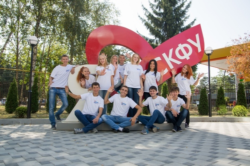

Северо-Кавказский федеральный университет – крупнейшее высшее учебное заведение Северного Кавказа. Он образован в 2012 году путем слияния Северо-Кавказского государственного технического университета, Ставропольского государственного университета и Пятигорского государственного гуманитарно-технологического университета.
22 тысячи студентов
11 институтов
студенты 89 национальностей
1662 иностранных студента
2878 сотрудников
211 докторов наук и 829 кандидатов
наук
наук
156 направления подготовки
бакалавриата, магистратуры,
аспирантуры и ординатуры
бакалавриата, магистратуры,
аспирантуры и ординатуры
102 кафедры
50 программ дистанционного
образования
образования
27 научных школ,
47 научных направлений
47 научных направлений
10 диссертационных советов
по 24 специальностям
по 24 специальностям
28 учебных корпусов,
9 общежитий
9 общежитий
Миссия СКФУ – предоставляя уникальные возможности в образовательной, научной и культурной сферах, формировать будущих лидеров, способных внести позитивный вклад в развитие страны и мира.